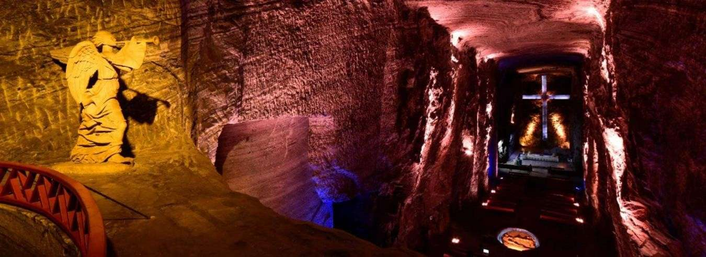

La Catedral de Sal de Zipaquira es una iglesia subterranea construida dentro de las tuneles de una mina de sal gema, ubicada a 180 metros bajo la superficie de la tierra, en el municipio de Zipaquira, departamento de Cundinamarca, a solo 49 kilometros de Bogota.
En 2007 fue elegida como la primera maravilla de Colombia en una votacion popular. Es considerada una obra maestra de la ingenieria y la arquitectura colombiana, y uno de los monumentos religiosos mas impresionantes de America Latina. Recibe aproximadamente 600.000 visitantes al ano.
La explotacion de sal en Zipaquira tiene mas de 500 anos de historia. Desde la epoca precolombina, los indigenas Muiscas ya extraian y comerciaban la sal de estas minas. Durante la colonia española, la sal de Zipaquira fue uno de los productos mas importantes para la economia de la Nueva Granada.
Los mineros que trabajaban en las minas construyeron una primera capilla en 1932 como lugar de oracion antes de entrar a trabajar. Esta capilla fue cerrada en 1990 por problemas de seguridad estructural. La catedral actual fue construida en un sector diferente de la mina y fue inaugurada el 16 de diciembre de 1995.
La catedral esta dividida en tres naves que representan el nacimiento, la vida y la muerte de Jesus. La nave principal tiene una altura de 23 metros y puede albergar hasta 8.000 personas. El elemento mas imponente es la cruz central de 16 metros de altura tallada directamente en la roca de sal.
El interior esta iluminado con luces de colores que resaltan las diferentes texturas y tonos de la sal. Hay 14 capillas que representan las estaciones del Via Crucis, cada una esculpida en la roca. La temperatura dentro de la catedral es de aproximadamente 18 grados centigrados durante todo el ano.
La mina de sal de Zipaquira es una de las mas grandes del mundo. Se estima que contiene aproximadamente 110 millones de toneladas de sal. La mina tiene una extension de mas de 2 kilometros cuadrados y sus tuneles alcanzan profundidades de hasta 200 metros.
Ademas de la catedral, dentro del complejo subterraneo hay un museo de mineria, una galeria de arte y un espacio de exposiciones. El recorrido completo por la catedral y el museo dura aproximadamente dos horas.
La Catedral de Sal queda a 49 kilometros de Bogota y se puede llegar en bus desde el Terminal de Transportes del Norte en aproximadamente una hora. Tambien hay tours organizados desde Bogota que incluyen transporte, entrada y guia.
Se recomienda llevar ropa abrigada ya que la temperatura dentro de la mina es fresca durante todo el ano. El recorrido incluye caminar por los tuneles, por lo que se aconseja usar zapatos comodos. Las visitas se realizan con guias oficiales y el ingreso solo es posible con reserva previa.